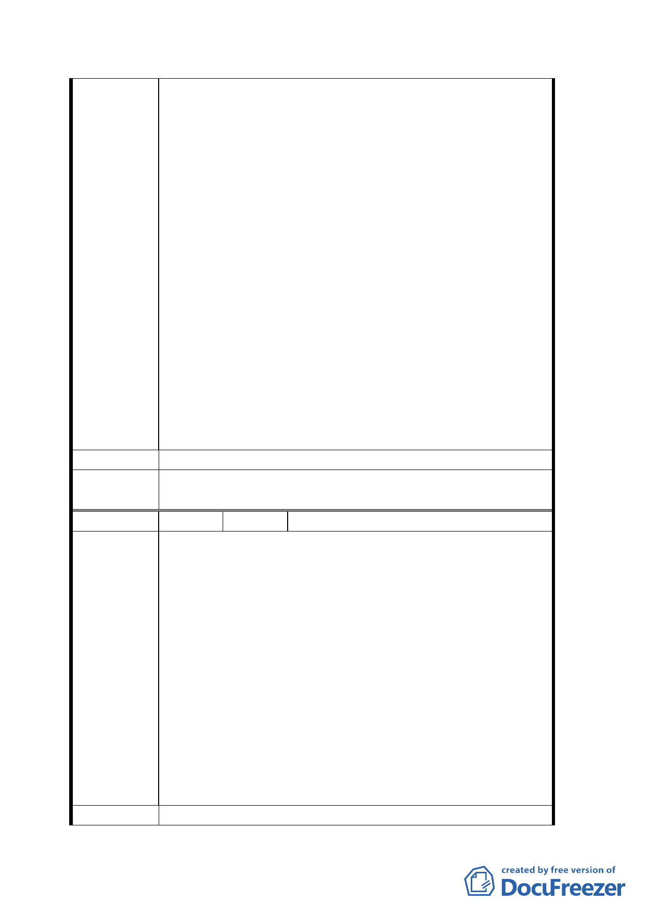

遭人占用，業已積極續辦標售作業。而今市府
擬就本案國有土地由高度使用強度之商四變
更為低度使用之公共設施用地，無異中斷國產
處分計畫，且明顯造成以全體國民利益之國產
權益損失，而成就毗鄰私有土地財產大幅提昇
之不勞而獲，顯失都市計畫之客觀公平及使用
分區劃定之目的。
2、 查土地使用分區管制之目的有四：（一）規劃
土地使用性質與強度，以促進並維護都市土地
的最適利用。（二）穩定及維護土地及建物的
價值，以確保土地及地上物等個人財產之價
值。（三）促進都市有計畫秩序的發展，減少
衝突或不相容的土地使用，獲致環境市容的景
觀與整齊。（四）維護與指導地區發展的方法
以穩固里鄰與社區，獲致周圍區域同性質的發
展。本案國有土地變更為公共設施後，對於土
地最適利用、財產價值確保、都市計劃發展秩
序、土地使用之衝突、周圍區域之同質性等均
有所違背。
建 議 辦 法 請維持原使用分區為第四種商業區。
委員會決
議
同決議一、二。
編 號 ３ 陳情人 簡銘宏
1、 貴陽街及西寧南路沿街為合法之建築物與商
家，非理教公所之違章建物，合法居民之權益
應予保障不容傷害。
2、 又貴陽街及西寧南路沿街商家，自四十年起再
此經營五十餘年，聚集多家印刷、旗幟、贈品、
牌匾等相關商家，有其產業特殊性及地域性，
陳情理由
應維持沿街之商業行為，並運用社區整體營
造，活絡社區產業，增加都市多元發展。
3、 原理教公所沿中華路有多家風味小吃，為大陸
老兵多年發展而來，具有其歷史意義及都市記
憶，應原址安置保留，並與中華路之地下商店
街連結。
4、 西門地區停車需求殷切，本案應考慮提供大量
之停車空間。
建 議 辦 法 1、 貴陽街及西寧南路沿街進深 20 公尺土地，維
七